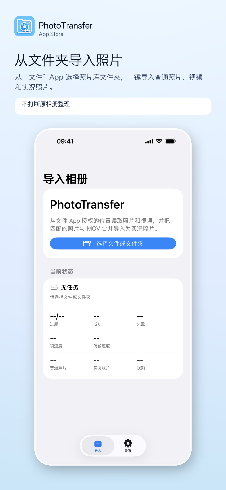
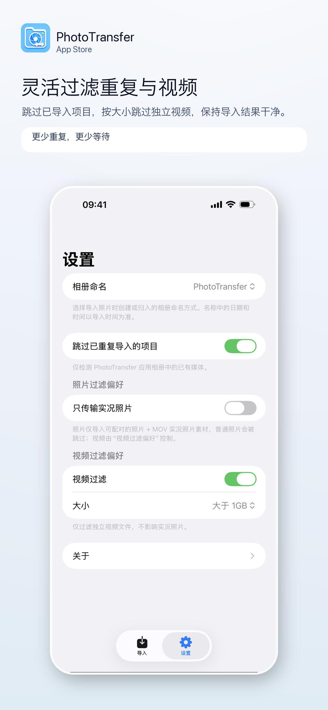
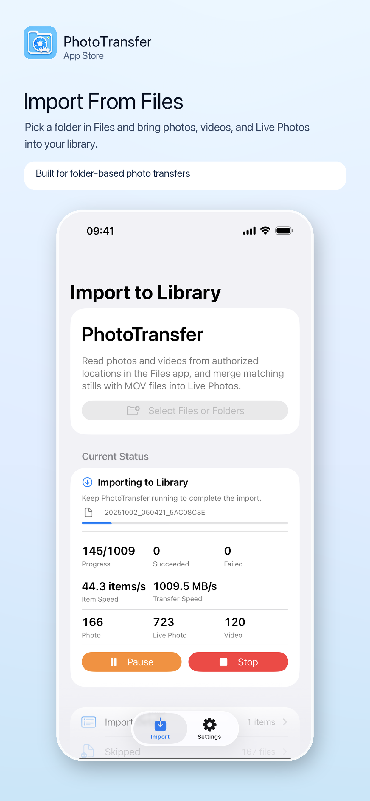
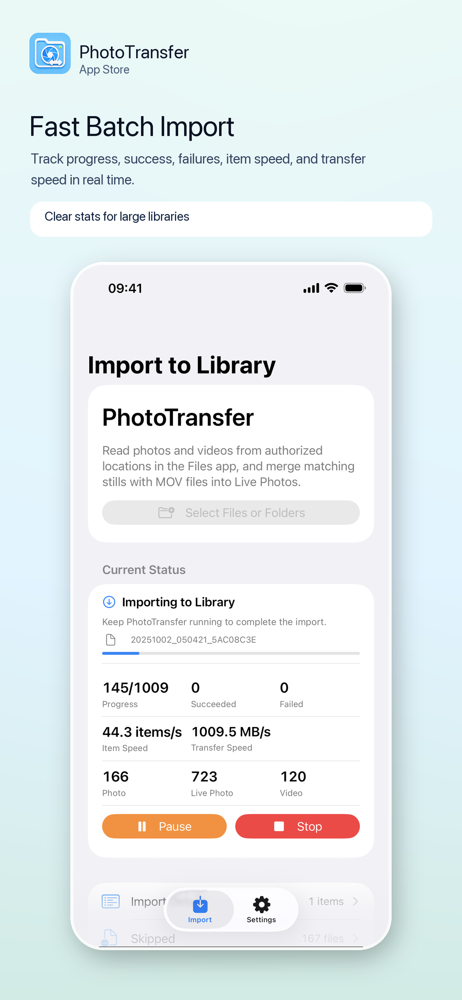
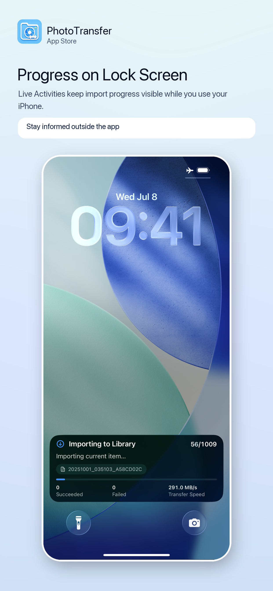
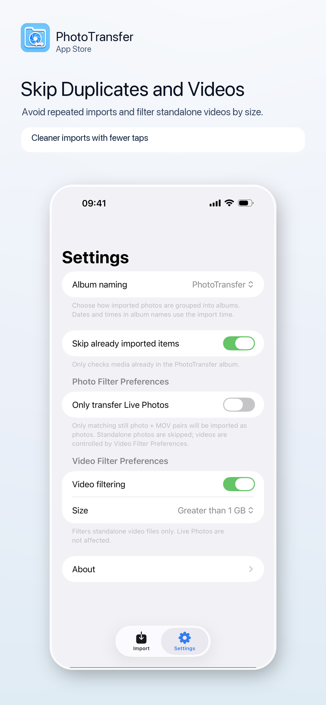

实况照片合并
Live Photo Rebuild
自动匹配照片与 MOV 文件，并导入为系统相册中的实况照片。
Automatically match still photos with MOV files and import them as Live Photos.
PhotoTransfer 从“文件”App 授权的位置读取媒体，批量导入系统相册，并自动匹配照片与 MOV 文件为实况照片。
PhotoTransfer reads media from locations you authorize in Files, imports it into Photos, and rebuilds matching still + MOV pairs as Live Photos.
不需要账号，不需要上传服务器。选择文件夹，保持 PhotoTransfer 运行，导入进度会清楚显示在 App、锁屏和灵动岛。
No account and no upload server. Pick a folder, keep PhotoTransfer running, and follow progress in the app, on the Lock Screen, or Dynamic Island.
自动匹配照片与 MOV 文件，并导入为系统相册中的实况照片。
Automatically match still photos with MOV files and import them as Live Photos.
实时显示成功数、失败数、项目速度、传输速度，并支持实时活动。
See successes, failures, item speed, transfer speed, and Live Activity updates.
自定义相册命名方式，跳过已导入项目，并按大小过滤独立视频文件。
Customize album naming, skip already imported items, and filter standalone videos by size.





